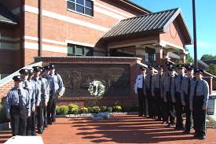
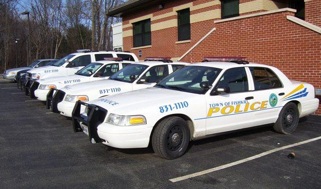

Who We Are

The Cadet program, or Law Enforcement Explorer program,
is an official program of the Town of Fishkill Police Department.
The explorer program is a division of Learning-For-Life, which is
a section of the Boy Scouts of America.
The explorer program is designed to expose young men and women, aged 14-21, to the vast
career choices available in law enforcement today, as well as
promoting the growth and development of themselves.
Explorers get the incredible opportunity to learn various aspects
of the law enforcement field that usually takes many unfortunate
new law enforcement personnel some time to learn. Explorers get the
opportunity to learn in the classroom as well as in the field. This
training includes actual "hands-on" field experience, ride-along programs,
and instruction on many law enforcement skills.

Cadets are also responsible for various community service as well as
law enforcement service duties that include traffic and crowd control
at various events, public/ community relation details, various crime
prevention details, and various safety details. In addition to this,
cadets work shifts along side Police Dispatchers in communications;
receiving invaluable hands-on training.
The cadets also have the opportunity to participate in the post's
Ride-a-Long Program. This aspect is likely the most valuable part of
the program. Cadets participating in this program ride with police officers
on their normal tour. Cadets have the opportunity to observe and take in various
tactics and procedures. In addition, cadets get a better concept and learn the
various duties of the officer, his paperwork, and his handling of different situations.
 Town of Fishkill Police Cadets
Town of Fishkill Police Cadets